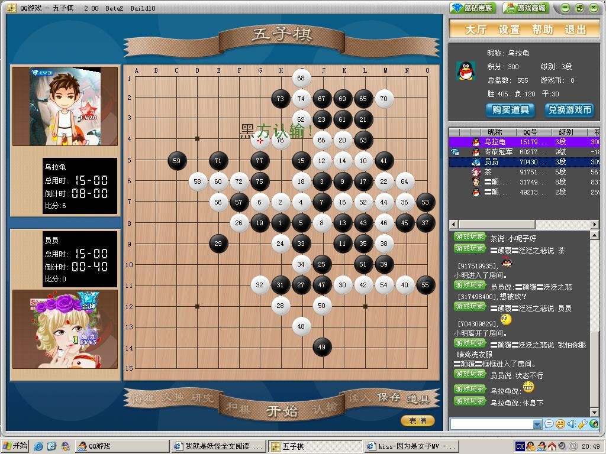

刚走出来的超罕见的禁?
#1 刚走出来的超罕见的禁?作者：岑小鱼 发表时间：2010-6-27 20:55:30
#2 Re:刚走出来的超罕见的禁?作者：岑小鱼 发表时间：2010-6-27 20:58:54
超级罕见啊 居然在对局中出现这种情况......
好像是上次论坛谈论成5到底算不算禁的情况?
但又有点不同 毕竟这个四。。是可以成5的....而上次讨论的情况是设想中的....
个人认为这个抓四四禁应该没有什么异议
［此帖子已被 岑小鱼 在 2010-6-27 21:01:33 编辑过］
#3 Re:刚走出来的超罕见的禁?作者：越狱行辕 发表时间：2010-6-27 21:52:16
是比较少见#4 Re:刚走出来的超罕见的禁?作者：裁决殿雪月 发表时间：2010-6-27 22:56:43
《我就是妖怪》（估计是起点中文网）
《因为是女子》MV
windows经典界面
［此帖子已被 裁决殿雪月 在 2010-6-27 22:59:11 编辑过］
#5 Re:刚走出来的超罕见的禁?作者：大雪无痕 发表时间：2010-6-28 9:14:48
 扁担阵而已
扁担阵而已#6 Re:刚走出来的超罕见的禁?作者：五子天下 发表时间：2010-6-29 14:12:38
我怎么没看出来他为什么认输？？#7 Re:刚走出来的超罕见的禁?作者：我就不信注册不上 发表时间：2010-6-29 16:58:01
仅仅是扁担禁而已，所谓的“罕见”，更多程度上是被“长连”迷惑了#8 Re:Re:刚走出来的超罕见的禁?作者：岑小鱼 发表时间：2010-6-29 18:15:11
引用：
原文由 我就不信注册不上 发表于 2010-6-29 16:58:01 :
仅仅是扁担禁而已，所谓的“罕见”，更多程度上是被“长连”迷惑了嘿 有迷惑所以才说罕见嘛 一切假象破除后肯定就只是....而已
#9 Re:刚走出来的超罕见的禁?作者：越狱行辕 发表时间：2010-7-1 6:08:22
楼主的意思 是最后成五的时候存在 长连。楼主也并没有说这里不算禁手，比较罕见的意思是这里五和禁手同时存在，在实战中还是很少见的#10 Re:刚走出来的超罕见的禁?作者：左伟光 发表时间：2010-7-3 9:12:21
很明显，F5是4，4禁，H5没什么意义了
#11 Re:刚走出来的超罕见的禁?作者：紫云儿 发表时间：2010-7-5 7:33:51